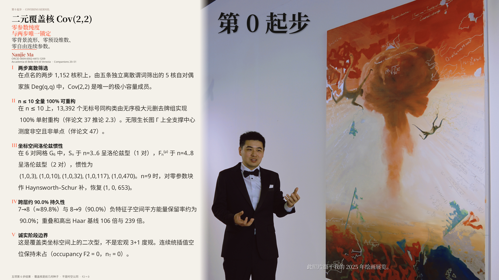
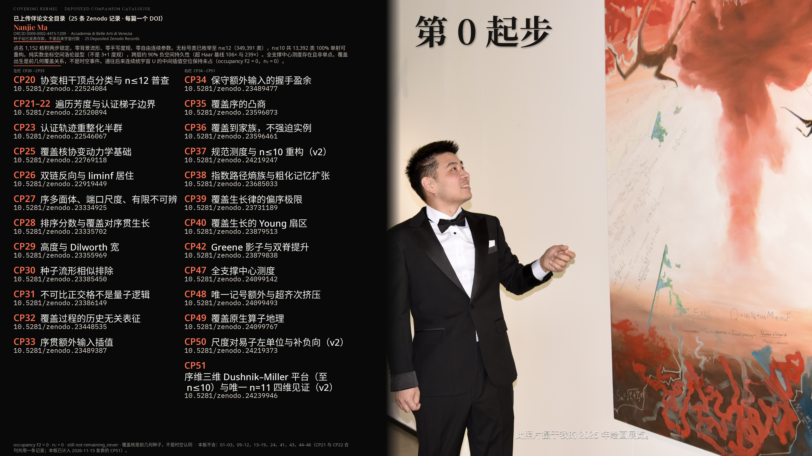
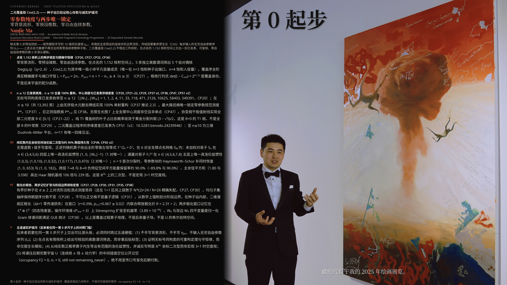

第 0 起步 · 种子站披露
纲领说明 · 2026-11-15 · 马楠杰 ·
ORCID 0009-0002-4415-1209
About / Work 子页。三张叠在 2025 年画展现场照片上的对外图版，配种子站口径卡。不是首页首屏。不是排名。不是突破通知。不是发生学付款。活的 25 条存款表仍在覆盖核页。
时空之前：一个元素，两个端口，两次出生。
覆盖核是已落盘的种子站家族。它不是后来的完整宇宙。
怎么读这一页。
下面三张图叠在作者 2025 年画展现场照片上，是插图，不是定理，不是存款，也不是把覆盖出生等同于时空点。
数学仍以覆盖核奠基工作页和 Zenodo 伴论文为准。
目录图是已上记录的 25 条覆盖核清单海报；活的存款表仍在覆盖核页。

定理展板。照片摄于 2025 年画展。
叠字：覆盖核 Cov(2,2)；1,152 候选核空间中的唯一最小容量核；覆盖历史在规模 10 内可重建；规模 11、12 出现碰撞；覆盖过程的历史无关刻画；全支撑中心测度非空且不唯一；S 在 ℝWn 上的洛伦兹双线性型不是时空度规；主角持续是 look，不是联络。
不是证明，不是存款，不是发生学付款。

目录图。照片摄于 2025 年画展。
叠字：已上 Zenodo 的二十五条覆盖核记录——伴论文 20–40、42、47、48、49、50 与 51。伴论文 41 不列入。这是海报，不是活表；存款表仍在覆盖核页。

种子站护城河，用 2025 年画展现场照片。
叠字：种子站已落什么、与其它第一法则的有范围对照，以及本纲领明确不说的句子。
同一条边界：覆盖出生是前几何种子事件，不与时空点等同。
手里有什么
覆盖核是协变覆盖生长，只有两种生成元：一次出生要么一个父，要么恰好两个不可比的父。
伴论文 25 是这一家族的奠基说明。
对象是种子站家族 F。它不是后来的完整宇宙 U。
- 五个独立的离散谓词在 1,152 候选核空间里选出自对偶家族 Deg(q, q)。Cov(2,2) 是饱和出容量 3、入容量 4 的唯一最小非平凡容量核（伴论文 36）。后续阶段不必抄这一核空间。
- 最大删除下，覆盖历史到规模 10 仍可重建。指定的历史无关路径熵测度 P*n 在每一层 Wn 上唯一。规模 11、12 的无序牌组普查不是单射（伴论文 37 第 2 版）。指定过程内部的唯一，不是发生学唯一。
- 全支撑中心测度集合非空；未展示极端全支撑中心测度（伴论文 47）。
- 覆盖尺度换位子满足全 n 左单位 1TΩn = 0T。S 的四规模洛伦兹平台是 ℝWn 上的双线性型，不是时空度规。T 下的互补负方向与通量矩阵 F 都不同于 S（伴论文 50 第 2 版）。二进制倍增仍是 look，不是定理。
- Dushnik–Miller 维数：规模 8、9、10 上每一个维数至少为 3 的覆盖过程类恰好是 3；规模 11 有唯一的维数 4 类（伴论文 51 第 2 版）。覆盖出生不是时空事件。
边界说清
禁止当成付款或对外口号。
- 不说：已经从覆盖核导出 3+1 洛伦兹时空和量子场，或已经解决量子引力。
- 不说：极早期宇宙必须是 Cov(2,2)，而且这一唯一性已经长出后来的时空。
- 不说：尺度换位子是闵可夫斯基光锥，或洛伦兹已经付款。
- 不说：二进制倍增 2n−6 对一切 n、一切指名法则都是定理。
- 不说：覆盖出生是时空事件，或覆盖反链是 CMB 天空。
- 不说：打覆盖核是为了够到 CMB、H0 或 3+1。那是打错站。
后面的空位保持空。空不是禁令。开着不等于近。
有范围的对照
因果集序贯生长、IKKT/BFSS 矩阵模型、AdS/CFT，通常一开始就带有本纲领在种子站禁止的对象：序贯出生律、连续体或大 N 矩阵、或对偶引力体。
这是种子上更干净的来源切割，不是更好的天空计算器，也不是后来域上的优越。
| 第一法则 | 此处的种子站读法 |
|---|
| 覆盖核 Cov(2,2) | 已落盘的种子家族。两种生成元。种子上没有额外序贯参数。不是后来的 U。 |
| 因果集序贯生长 | 序贯出生律在此种子上是额外的。种子评估页上它目前更像真种子家族；那一排名不是付款。 |
| IKKT / BFSS | 从矩阵出发。此处禁止当种子。后来域的工具仍是后来域的工具。 |
| AdS/CFT | 从一对对偶出发。覆盖反链不是全息屏。 |
客观性检验，保留。
漂亮的小 N 数字，若在预先登记的更大检查上失败，就保持失败。
零参数交叠律交叉在 N = 256 上看起来像双过，在 N = 512 与 1024 上失败。
尺度换位子的自然测度加权，可以在指名对上把单负窗口维持到规模 8，仍在规模 9 分裂。
这些负向结果留在记录上。不靠后来说辞改写成付款。
旗舰存款
完整覆盖核表——伴论文 20–40、42、47、48、49、50 与 51，二十五条——在覆盖核页。伴论文 41 不列入。旗舰链接：
母论文 · 23729585
伴论文 25
伴论文 27
伴论文 36
伴论文 37 第 2 版
伴论文 50 第 2 版
伴论文 51 第 3 版
伴论文 52
覆盖核 · 存款表
较早的 2025 画展图版
种子评估
ORCID